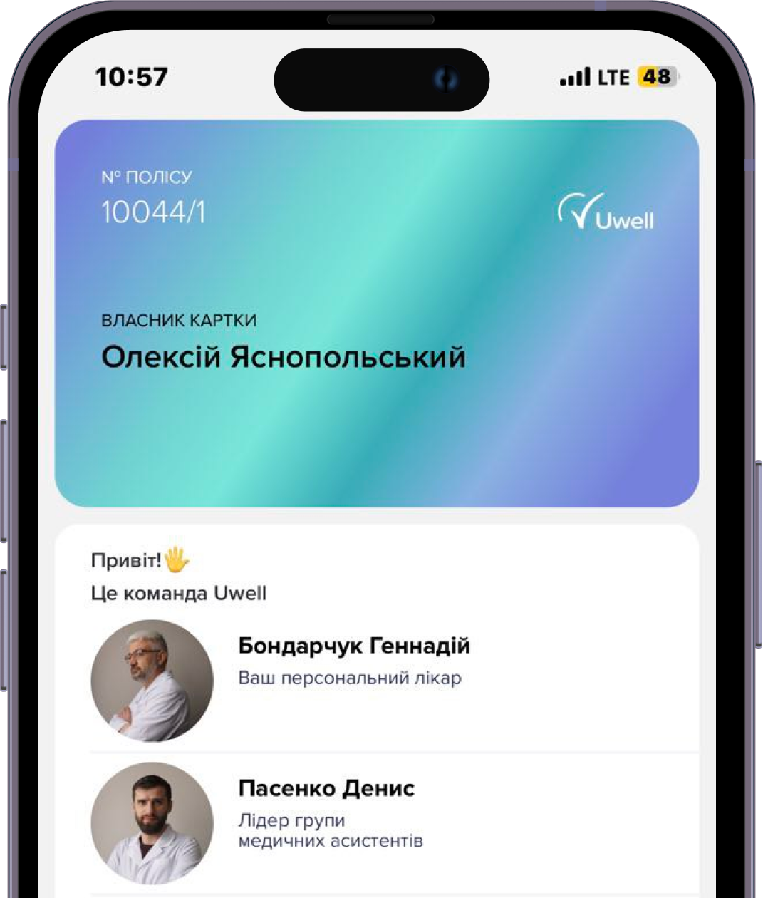
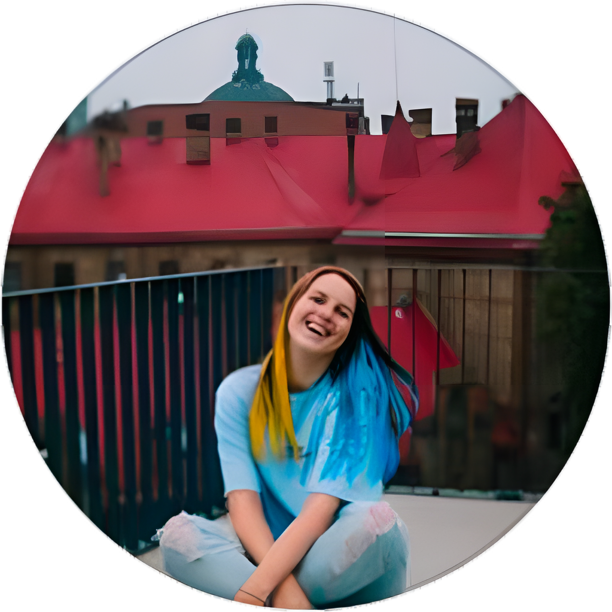

Знайомтесь!
UWELL — це єдиний сімейний лікар, як треба ВАМ.
24/7 питайте про все, що болить, online чи за телефоном
отримуйте прозорі пояснення діагнозів і призначень
кайфуйте від абсолютної уваги команди, що закриває всі клопоти за вас
ВИ ТА ВАШЕ ЗДОРОВʼЯ В ЦЕНТРІ УВАГИ 24/7/365
Більше ніякої безглуздої біганини від лікаря до лікаря та переплат за непотрібні візити. З Uwell спілкуйтесь з доктором, скільки треба, з будь-якої точки України чи світу та отримуйте лише перевірені діагнози.
Лікарі Uwell не мають зобовʼязань перед фармацевтичними компаніями. Наша база — міжнародні протоколи лікування.
Тобто лікар простими словами пояснює, що з вами та чому потрібні саме ці ліки.
ПЕРЕВАГИ UWELL-ПІКЛУВАННЯ
СЕРВІС
ми за вас оформлюємо лікарняні та електронні рецепти
ми самі бронюємо ліки в аптеках, підбираємо лабораторії та записуємо на діагностику
за потреби — ми підбираємо та записуємо вас до вузьких перевірених спеціалістів і лабораторій, а також викликаємо “швидку”
ЕКОНОМІЯ
ви платите лише за ті аналізи та ліки, що дійсно потрібні
ви отримуєте знижки у клініках
ви економите на візитах, бо можете спілкуватися зі своїм сімейним лікарем, скільки завгодно і де вам зручно
УВАГА
звертайтесь з будь-яким питанням — нежить, гострий напад чи проблеми, що давно не дають спокою
у будь-який момент запросіть додаткову перевірку діагнозу та отримайте зрозумілі пояснення
насолоджуйтесь абсолютною увагою до своєї проблеми до повного одужання
Uwell полегшує життя:
2 000 +клієнтів Uwell
32 000 +організованих послуг за рік
3 рокироботи проекту

ЧОМУ ОБРАТИ UWELL?
всі документи також онлайн
@@loop("html/_how-we-work-item.html", [
{
"title": 'Прозора система лікування',
},
{
"title": 'Доступ до лікаря 24/7, коли вам треба',
},
{
"title": 'Увага до кожного вашого запитання',
},
{
"title": 'Зрозумілі пояснення, що робити',
},
{
"title": 'Перевірені лікарі з досвідом',
},
{
"title": 'Команда, що закриває всі клопоти',
},
])
@@include("html/_tariffs.html")
ДО ПІДПИСКИ ВХОДЯТЬ:
@@loop("html/_subscription-card.html", [
{
"id": '#Сімейний лікар',
"text": 'питайте що завгодно і коли завгодно',
},
{
"id": '#Медичний ассистент',
"text": 'покладіться на нього з документами та всіма медичними питаннями',
},
{
"id": '#Електронні рецепти',
"text": 'отримуйте онлайн — без черг і бюрократії.',
},
{
"id": '#Відкриття та закриття лікарняних',
"text": 'забирайте необхідні довідки за лічені хвилини',
},
{
"id": '#Додаткова перевірка діагнозів',
"text": 'звертайтесь і ми перевіримо призначення іншого лікаря, якщо ви в ньому сумніваєтесь',
},
{
"id": '#Пошук вузьких спеціалістів',
"text": 'відвідуйте перевірених фахівців — ми самі знайдемо та запишемо вас до них',
},
{
"id": '#Бронь ліків',
"text": 'забирайте потрібні препарати без марафонів по аптеках — ми знаємо, де в наявності',
},
{
"id": '#Увага 360',
"text": 'лікуйтесь, а ми будемо опікуватись вашим станом до повного одужання та навіть після',
},
])
Відгуки

Марія Кравцова
Ми працюємо з Uwell вже близько року і завжди хлопці на зв'язку, готові надати консультацію та дуже цікаві додаткові сервіси.
Я відчуваю впевненість, тому що будь-яких проблем зі здоров'ям мені є куди звернутися.
Ruslan Nazenko
Ситуація склалася так, що виникла потреба в оперативному втручанні, хочу висловити велику подяку, за повний супровід, консультацію, підтримку, та професіоналізм, до, під час, та після операції, лікарям Тетяні Фариній та Інні Шкарбановій. Здавалося б вони просто робили свою роботу, але має велике значення, ЯК робити роботу, тим більше коли працюєш з людьми.
Дякую!
Tatyana Vykhystiuk
Very helpful and supportive team. Always here for you and fulfill and request efficiently!
Ми працюємо 24/7. За кожним нашим клієнтом ми закріплюємо кілька персональних асистентів, які працюють позмінно, щоб забезпечити цілодобову турботу. Лікарі та health-менеджери працюють за звичним “офісним” графіком: з 9 до 18. Проте, якщо ви звертаєтеся після 18 години і ваш персональний асистент, вислухавши й оцінивши ваше запитання, розуміє, що вам потрібна негайна консультація лікаря, ви обов’язково її отримаєте.
',
},
{
"title": 'Які послуги включає сервіс Uwell?',
"text": '
Всі наші клієнти отримують послуги персонального асистента, персонального лікаря та програму лояльності зі знижками до 50% в закладах-партнерах. Персональний асистент здійснює організаційний та тайм-менеджмент вашого лікування, організовує всі необхідні записи на консультації та обстеження, робить закупівлю та доставку призначених ліків. Персональний лікар надає онлайн-консультації, пояснює призначення інших лікарів та надає другу думку, визначає план лікування та рекомендує обстеження й консультації профільних спеціалістів, здійснює супровід в адміністративних питаннях (рецепти, лікарняні тощо).
Ми працюємо у форматі підписки, вартість залежить від періоду, на який ви сплачуєте послугу. Якщо ви сплачуєте за рік наперед, то вартість одного місяця становить 10 доларів, якщо на півроку — 13 доларів, якщо помісячно — вартість одного місяця складе 15 доларів. А зараз у нас діє акція: “ранні пташки”, ті, хто оформить підписку до 1 липня отримують можливість сплачувати помісячно 10 доларів.
Стати нашим клієнтом дуже просто. Ви можете просто зареєструватись у додатку. Після цього з вами зв'яжеться наш менеджер. Якщо ви виявите бажання поспілкуватися з лікарем, щоб зрозуміти глибше наші підходи та цінності — менеджер організує Вам зустріч. Після цього ми надсилаємо вам посилання на сплату для активації підписки і ви можете користуватися сервісом.
",
},
{
"title": 'Скільки разів я можу звертатися, чи є ліміт?',
"text": '
Наш формат підписки передбачає безлімітну кількість онлайн-консультацій лікаря, послуг персонального асистента. Ви сплачуєте за певний період часу та користуєтеся всіма послугами без обмежень.
',
},
{
"title": 'Чи може людина, яка перебуває за кордоном, скористатися послугами Uwell?',
"text": '
Так, наші клієнти, які перебувають за кордоном, можуть отримувати онлайн-консультації українських лікарів, а також, при потребі, складення плану лікування та рекомендації, як діяти. Також наші асистенти допомагають підібрати ліки, які вам потрібні, в аптеках інших країн, орієнтуючись на діючу речовину, адже звичних українцям препаратів в європейських країн часто немає, а самостійно зорієнтуватися складно.
',
},
{
"title": 'Яку освіту та кваліфікацію мають персональні асистенти?',
"text": '
Наші персональні асистенти — це обов’язково фахівці з медичною освітою, інтерни або ж медсестри чи фельдшери.
',
},
{
"title": 'Як ви обираєте команду лікарів?',
"text": '
Ми формуємо команду лікарів з тих фахівців, котрі розділяють наші головні цінності: дотримання принципів доказової медицини та емпатію. Ми переконані, що комунікація з пацієнтом так само важлива, як і якість лікування. Тому працюємо з тими, хто розуміє і втілює це в своїй практиці. А також ми навчаємо наших лікарів принципам комунікації та побудови партнерських стосунків з пацієнтами та дбаємо про те, щоб вони безперервно підвищували свою кваліфікацію.